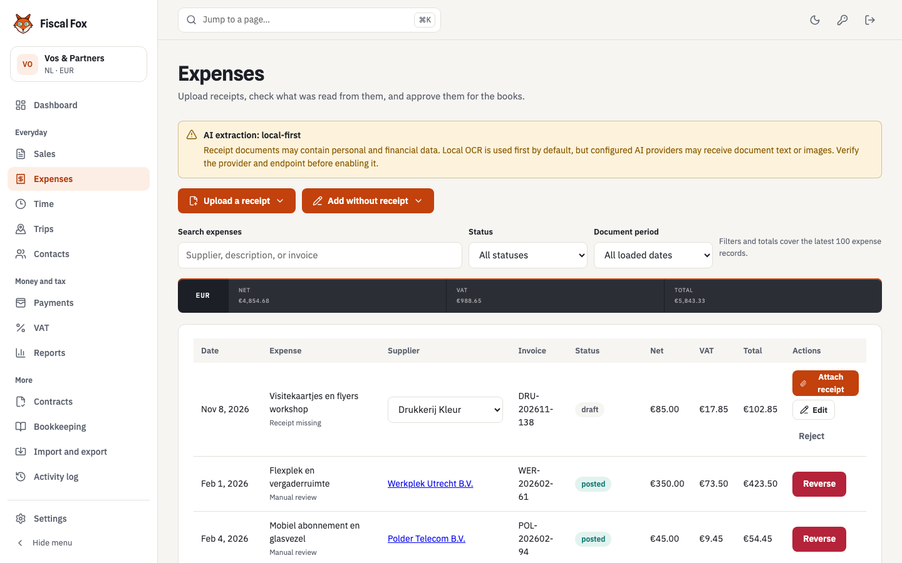

Expenses
Expenses turns supplier receipts into bookkeeping. Upload a receipt, check what was read from it, and approve it for the books.

Upload a receipt
- Open Upload a receipt.
- Choose the Receipt (PDF or photo) and optionally add a Description.
- Select Upload and read.
Fiscal Fox stores the file and reads the supplier, invoice number, amounts, and
VAT from it in the background (status extracting). The expense then waits in
needs-review. The list shows how confident the reading was, or Manual
review when nothing could be read reliably. If your organization set an
auto-create threshold, confident
readings are posted straight away instead.
Warning
The banner at the top shows how receipts are read. Local text recognition is the default. If your organization enabled an AI provider in Settings, receipt text or images may be sent to that provider.
Add an expense without a receipt
Lost the receipt, or it has not arrived yet? Open Add without receipt, enter the Description, Document date, Supplier, Net amount, VAT amount, Purchase tax code, and Expense account, and select Save draft.
The expense is saved as a draft marked Receipt missing. It cannot be
approved until you select Attach receipt and upload the file. Attaching
keeps the amounts you typed and moves the expense to review. The
dashboard to-do list counts drafts that still need a receipt.
Review and approve
For each expense in review you can:
- Edit the description, date, supplier invoice number, amounts, tax code,
and expense account (one-line expenses in
draftorneeds-review). - Pick or change the Supplier directly in the list from your existing contacts. To add a new draft supplier while typing, use Add without receipt.
- Approve to post it to the books, or Reject it.
A posted expense is corrected with Reverse, which books the opposite entry instead of deleting anything.
| Status | Meaning |
|---|---|
draft | Typed by hand; waiting for its receipt. |
extracting | The receipt is being read. |
needs-review | Ready for someone to check and approve. |
approved | Approved; being posted. |
posted | In the books. |
rejected | Not booked. |
reversed | Posted, then cancelled by a reversal. |
Reverse-charged purchases carry no supplier VAT. Fiscal Fox self-assesses the VAT when they are approved; see Accounting rules.
Find expenses
Search expenses matches the supplier, description, or invoice number. Filter by Status and Document period (this month, quarter, or year). The bar above the list totals net, VAT, and gross per currency. Filters and totals cover the latest 100 expenses.
Who can do this
Owners, admins, and members add and edit expenses. Owners, admins, and accountants approve, reject, and reverse them. See Roles.